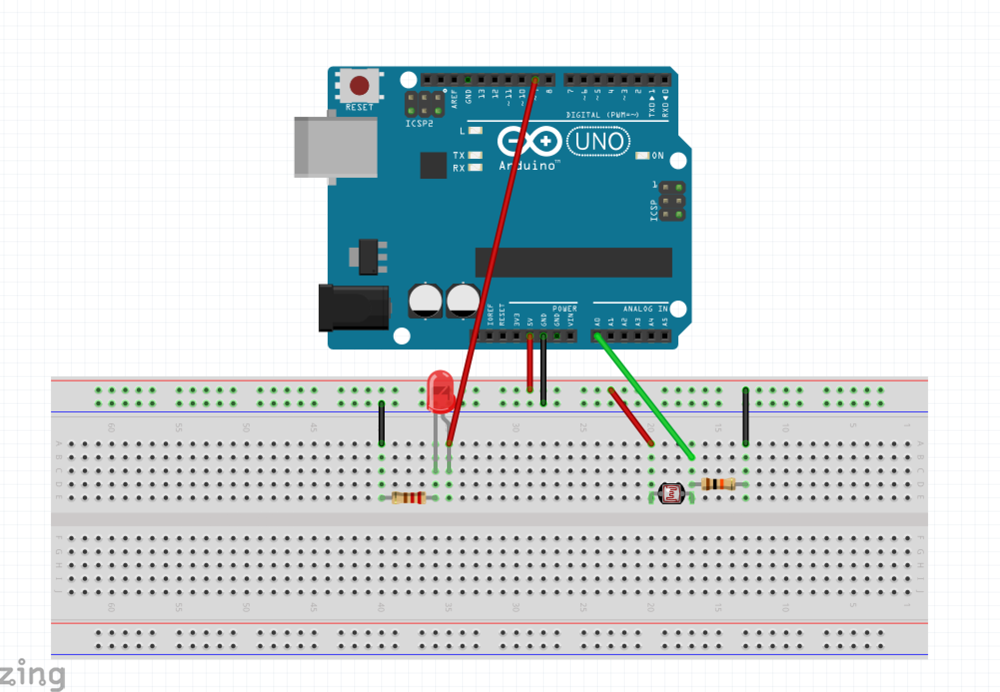
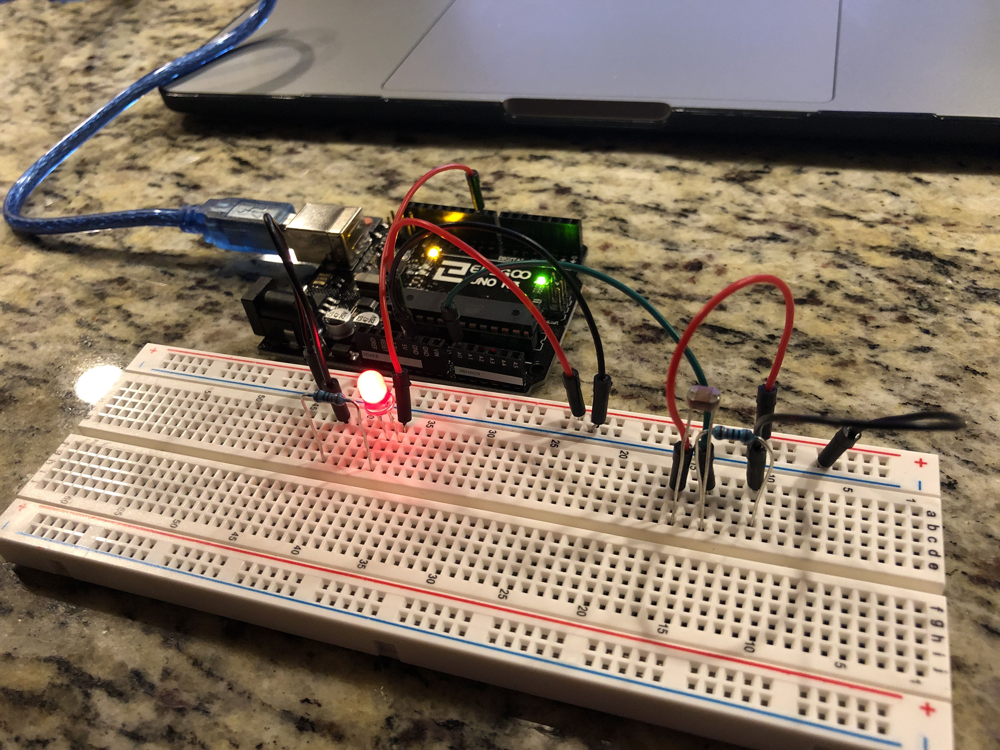
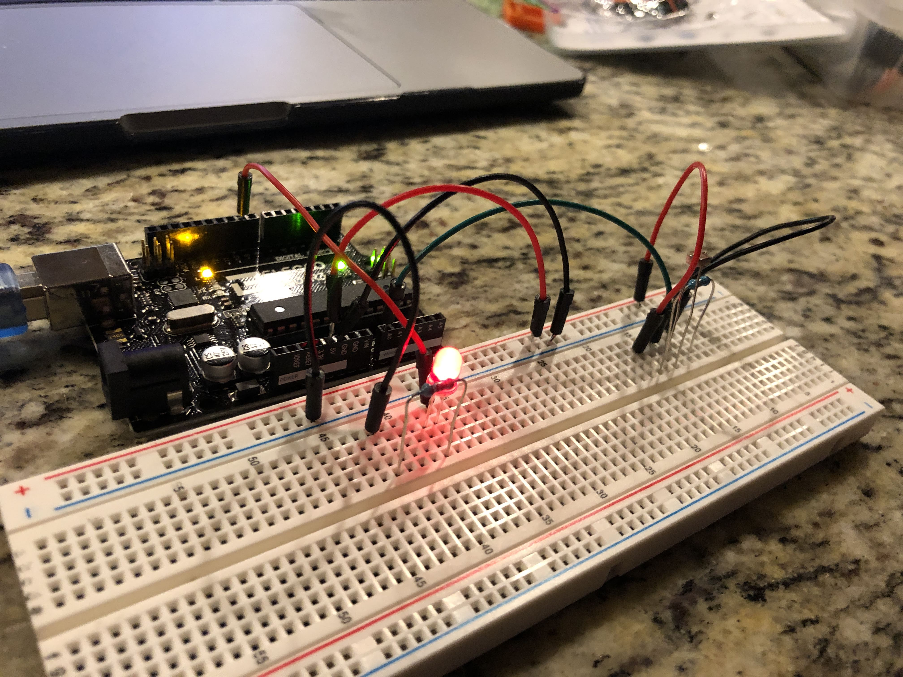
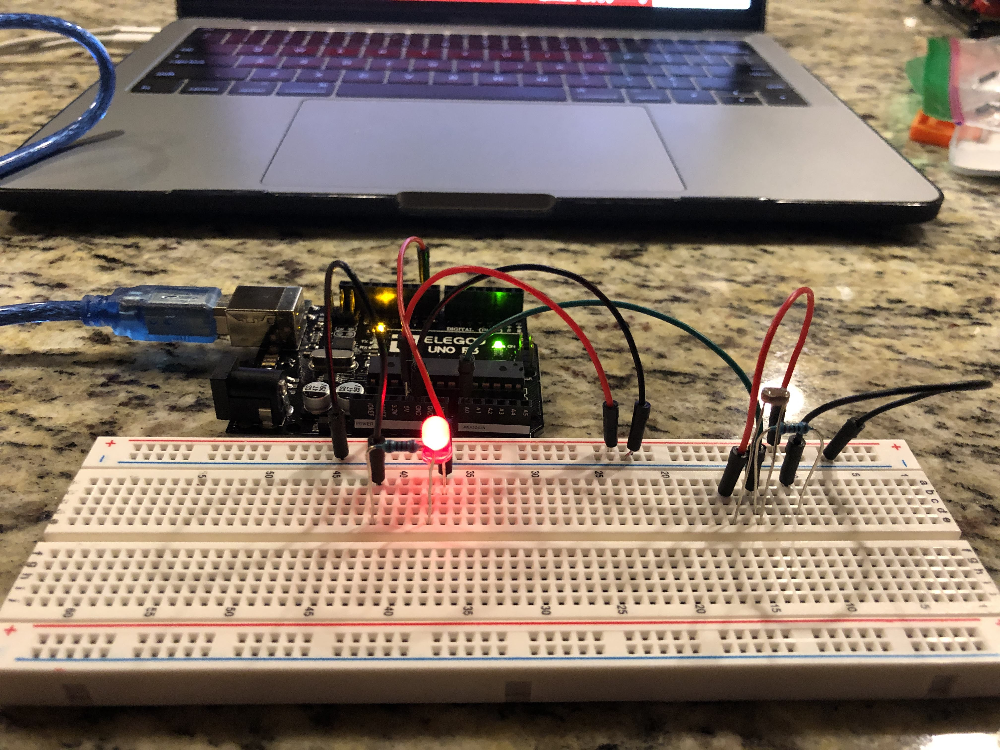
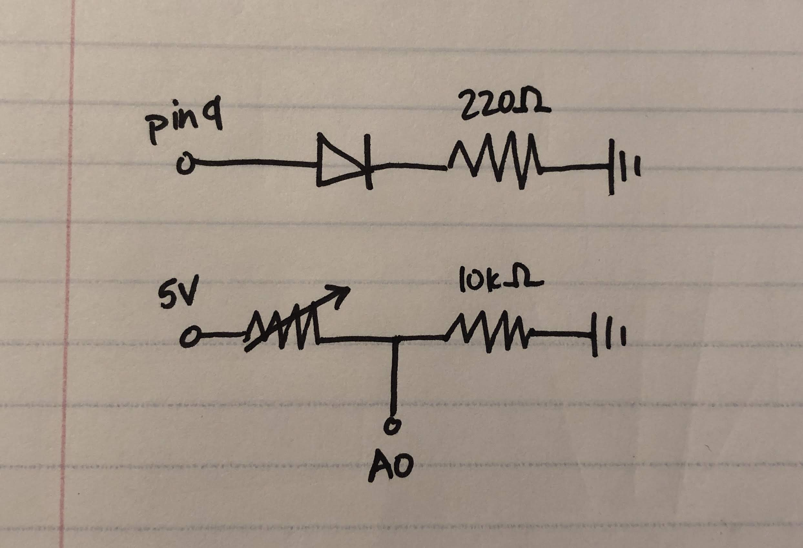
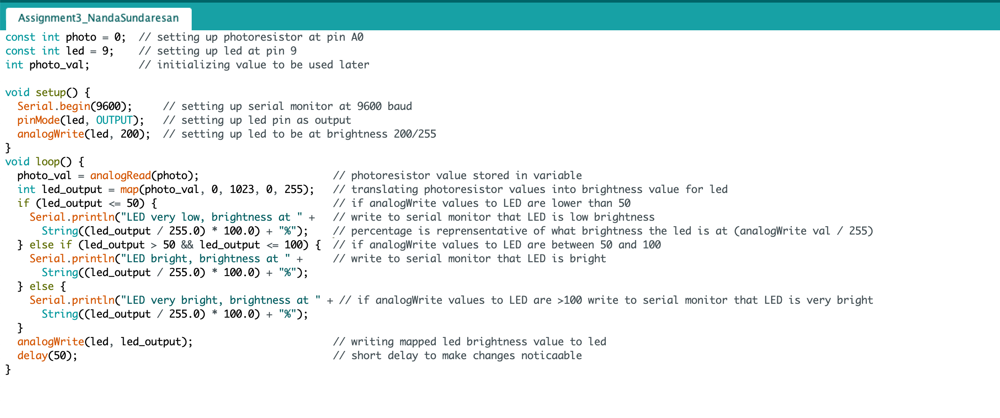

Circuit demo:

This is a gif showing how the circuit works when assembled.

This is a gif showing how the serial monitor displays changes in LED brightness.
Circuit diagram:

This is an image with details regarding how the circuit is assembled.
Here are some images of how the circuit looks assembled:
  
Schematic:

This is a schematic of my circuit. Calculations and justifications for resistor choices are described below:
Math:
To choose the correct resistor for the red LED, I used Ohm's law.
V = IR
Known variables: I = 30mA (limited by the LED), V = 5V (total voltage) - 1.8V (voltage drop of LED)
R = V / I
R = ~107 Ohms
I chose to use the 220 Ohm resistor since it is the one with the closest value to 106. For the photoresistor, I used a 10k ohm resistor to make sure the current was fully grounded when the switch is off.
Values I might read at the voltage breaker might include:

Code Snippet:

To satisfy all the conditions of the assignment, I decided to use analogRead() to get the condition of the photoresistor's current state. I used analogWrite() to initialize the LED at a brightness of around 80%. The map function was used to translate photoresistor states to LED brightness values from 0-255. Lastly, I used an if statement to change what is printed in the serial monitor.